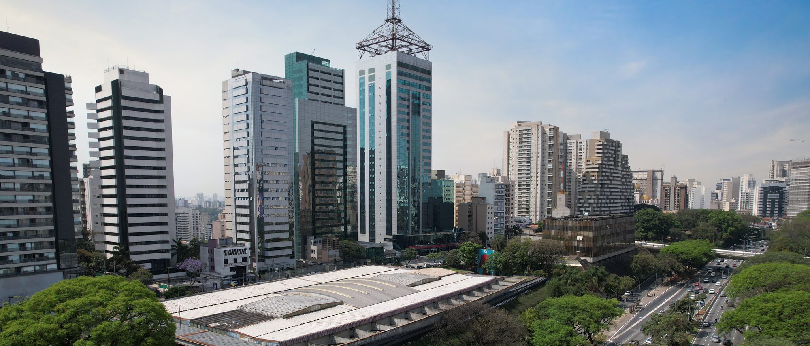
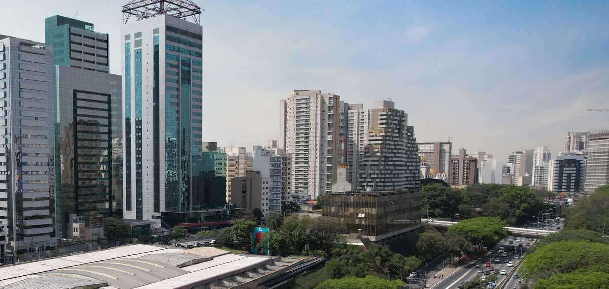
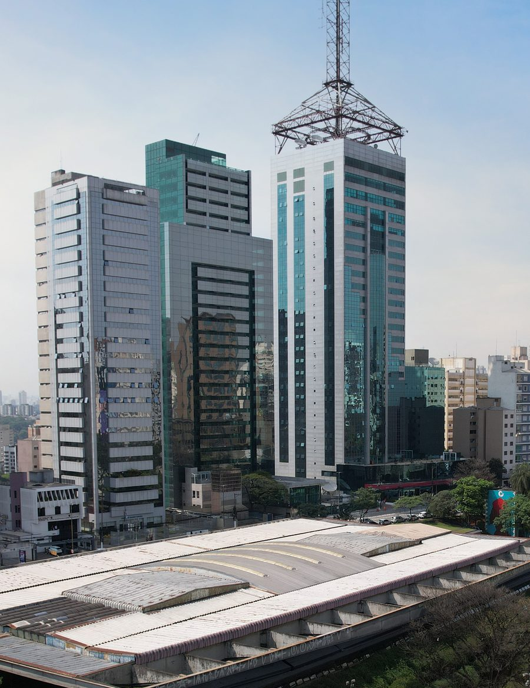

巴西葡语与沟通
听不懂会议，读不懂潜台词，日常事务处处受阻。
围绕您的真实工作场景定制企业葡语：会议、谈判、专业词汇与得体语体。三位 USP 教授授课，配套 AI 会话机器人与数字练习平台。


Live & Learn Brazil · your strategy, your talent, on shared ground
深耕圣保罗，助力企业落地巴西
决策反复、职责错位、返工延误、用工合规风险、家属难以安顿——这些问题很少写进管理报告，却每天消耗着你的时间与利润。
我们会倾听团队的声音，理解问题根源，研究数据与市场，为您提出高效可行的解决方案。
跨文化管理 · 企业落地 · 商务葡语 · 创新合作
决策反复：会上达成共识，会后无人执行。
职责错位：同一岗位，双方预期不同，工作落在空白处。
反馈无效：意见已提出、已确认，行为依旧。
沟通系于一人：双语员工成为唯一通道，一旦离开，合作停摆。
这些摩擦源于文化差异，代价落在损益表上。
倾听：访谈公司各层级、各部门。
理解：定位问题在哪个流程、哪个环节发生。
研究：将您的数据与经过验证的国际管理研究对照分析。
方案：与您的团队共同制定行动方案，一企一策，量身定制。
听不懂会议，读不懂潜台词，日常事务处处受阻。
围绕您的真实工作场景定制企业葡语：会议、谈判、专业词汇与得体语体。三位 USP 教授授课，配套 AI 会话机器人与数字练习平台。
初到圣保罗：找房、注册、开业、子女入学，事事从零开始。
圣保罗州全境商业与住宅不动产，从单间公寓到整栋楼宇。施工、装修、安装与安保全程技术支持。不动产与安家服务打包提供，一位协调人全程负责。


跨国合作项目常因语言、预期与工作方式不同而停滞。
我们为企业、大学与研究机构对接巴西合作伙伴，接待代表团，全程支持谈判与合作协议起草。目标一致的多元团队，往往能做出更具原创性的创新。
返工、延误、决策反复，根源常在文化摩擦。
我们倾听公司每一层级，分析所选运营环节的流程，与您共同制定行动方案，化解冲突，提升效率。以国际管理与跨文化能力研究为依据。
品牌与文化传播
在巴西发展壮大的品牌有一个共同规律：销售数字与文化契合度同步增长。要赢得购买，品牌首先要赢得喜爱。我们倾听您的团队和客户，了解巴西人如何使用和看待您的品类，研究赋予产品意义的生活习惯与文化参照，并提出品牌叙事、产品呈现和传播策略，帮助您的品牌在巴西自然成长。
对品牌名称、包装、故事和语气进行文化诊断。提供适应葡萄牙语和巴西文化参照的品牌叙事，并为广告公司、网红和销售团队制定沟通指南。
建立符合品牌调性的选题、视频和社交媒体素材生成系统，每次发布前均由我们的团队审核。
就活动策划、与教育项目及社区项目的合作提供建议，让品牌融入巴西人的日常生活。
就有助于营销和公关的文化项目赞助提供指导，包括巴西文化税收激励法，并由我们的法律与税务合作伙伴提供支持。
了解外国品牌如何因读懂（或忽视）巴西文化而成功或受挫。 → Brazil, Decoded（英文）
联系我们我们汇聚法律、税务、不动产、行政、语言学、组织文化与成人教育领域的专业人员，服务在巴西设立机构的企业，以及与国际伙伴合作的巴西企业。工作语言：中文、葡萄牙语、英语、意大利语。
认识团队 →我们以经过验证的研究和成熟方法工作，对每一条信息、每一项建议负责。超出专业范围的事项，我们如实告知，并引荐相应领域的专家。
通常需要 1 至 8 周，具体取决于公司规模与经营范围。流程涉及联邦税号（CNPJ）、州与市级登记、公司章程公证以及外资登记等环节。我们与合作律师事务所一起梳理完整清单，并在项目启动前提供书面时间表。
我们在实地工作中反复遇到三类。第一，层级与授权的理解不同：中方管理者期待的执行速度，与巴西团队的决策习惯不一致。第二，会议与反馈方式不同：巴西团队的"不同意"往往不会在会上直接说出口。第三，劳动法与工时文化的差异被当作态度问题来处理。这些问题表面上表现为人员流失和进度延误，根源却在流程与沟通的设计。
以巴西雷亚尔（BRL）计，大致参考区间如下。
住宅租金（每月）：内陆地区约 1,500 至 20,000 雷亚尔；圣保罗市区约 3,000 至 50,000 雷亚尔。
住宅购置：内陆地区约 30 万至 200 万雷亚尔；圣保罗市区约 50 万至 1,000 万雷亚尔。
商业地产的区间大致相当，另受地段、楼宇等级与用途影响。
以上为大致参考，实际价格随面积、装修标准、楼龄与合同期限变化较大。我们会根据您的预算、通勤距离与安保要求，给出具体的选址方案与比价表。
按欧洲共同语言参考框架（CEFR），能在会议中听懂并发言，通常需要达到 B1 至 B2 水平；技术岗位在掌握专业词汇后可以更早进入工作状态。我们先做水平测试，再按岗位设定目标，而不是按课时数售课。
巴西劳动法（CLT）在工时、加班、假期、解雇成本和工会协议方面的规定比多数国家更细致，部分条款还由行业工会的集体协议决定。外资企业最常见的风险，来自直接照搬母公司的制度文本。我们与合作律师一起核对制度与实际操作之间的差距。（本页信息仅供参考，不构成法律意见。）
圣保罗市、ABC 地区、坎皮纳斯、圣若泽杜斯坎普斯、索罗卡巴及工业腹地。